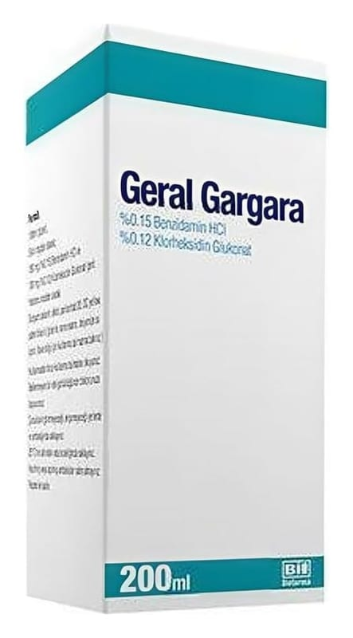

Geral % 0.15+% 0.12 Gargara, 200 ml

Ne için kullanılır
KT · Bölüm 1 GERAL ağız içi bölgesel tedavisinde kullanılan bir ağız preparatıdır. GERAL gargara, yeşil renkli, nane kokulu, berrak bir çözeltidir.
GERAL gargara 200 ml’lik PET şişelerde ve 15 ml’lik ölçeği ile birlikte, karton kutu içerisinde bulunur. Her bir kutuda 1 adet 200 ml’lik gargara vardır. GERAL, antimikrobiyal (mikropları öldüren veya çoğalmasını durduran) etkide bir madde olan klorheksidin glukonat ile non-steroidal antiinflamatuar ilaçlar olarak isimlendirilen gruba ait, ağrı ve inflamasyonun (iltihap) tedavisinde kullanılan, ayrıca yüzeysel olarak uygulandığında lokal anestezik (uygulandığı bölgede hissizleşmeyi sağlayan) etki gösteren benzidamin hidroklorür içermektedir. GERAL, ağız ve boğaz mukozasında enflamasyon ve ağrıyla seyreden diş eti iltihabı, ağız yüzeyi iltihabı, yutak iltihabı, bademcik iltihabı ve ağız içinde görülen yaralarda, Ağız ve boğazda iltihap oluşturan mikrobik hastalıkların önlenmesinde, hastanın yutma fonksiyonunun rahatlatılması ve diş eti rahatsızlıklarında belirtilerin giderilmesinde, Dişleri çevreleyen dokulardaki işlemlerden önce ve sonra, Işın tedavisi ve kanser ilaç tedavisi sonrası veya diğer nedenlere bağlı ağız içi tabakasının iltihaplarında (mukozitlerde), Dişlerin etrafındaki bakteri ve yiyecek artıklarının oluşturduğu tabakanın (dental plak) önlenmesinde kullanılır.